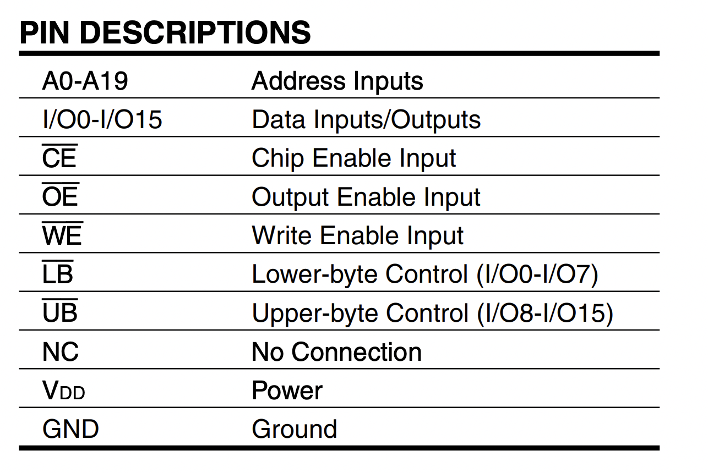
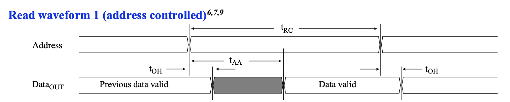
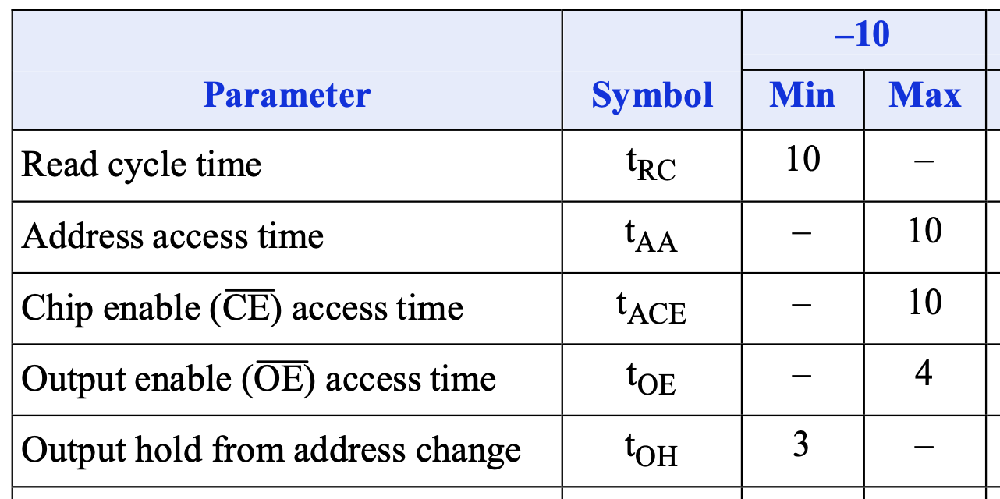
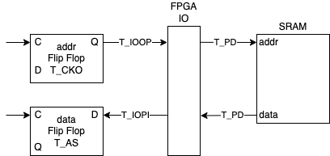
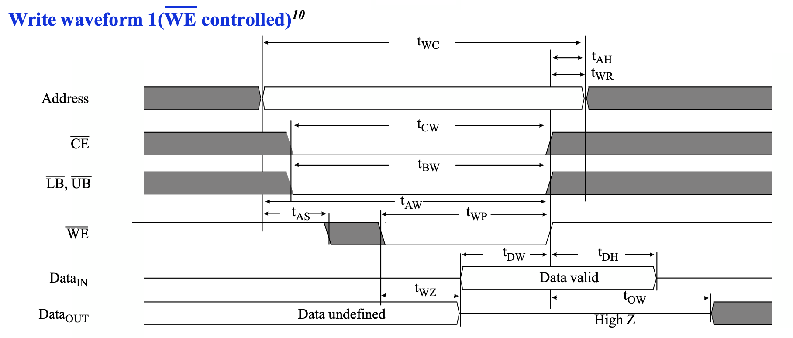
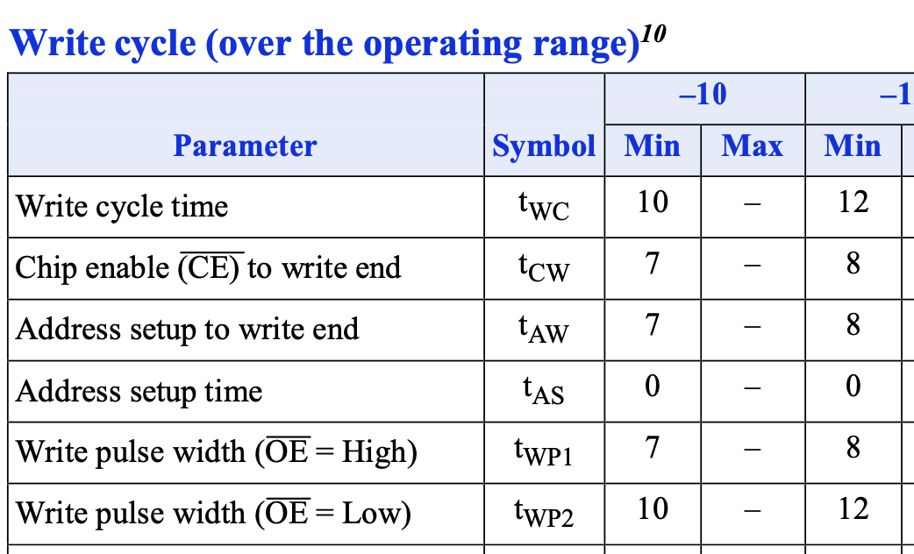
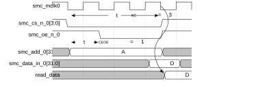
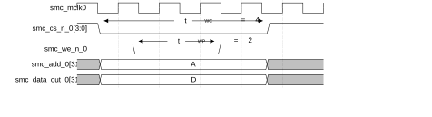
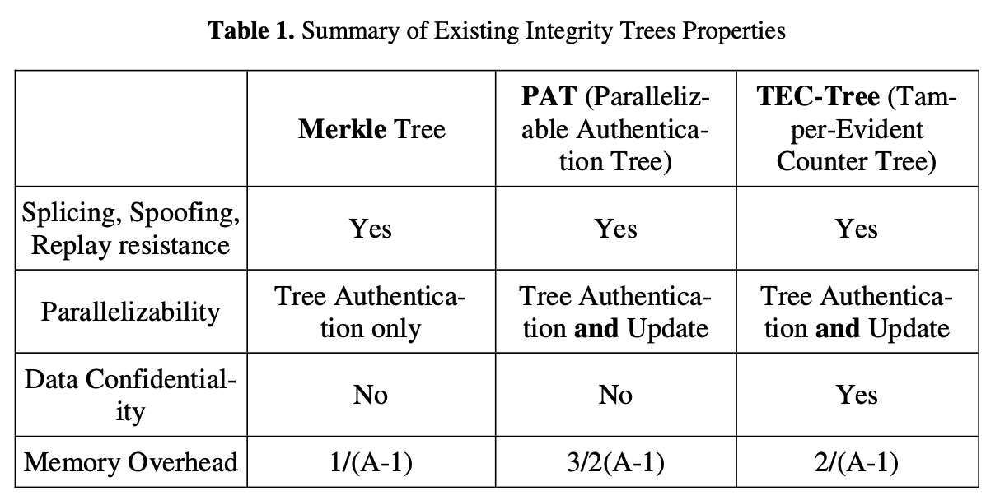
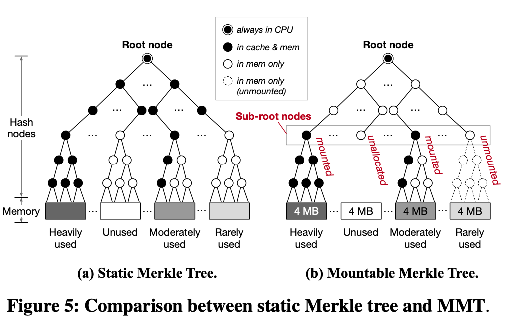

在 LiteX 中使用 UART over JTAG
背景
在给 Alinx AX7021 适配 LiteX 的时候，遇到一个问题：PL 上没有连接串口，只有 PS 连接了串口，如果用 RISC-V 软核的话，就会面临无串口可用的情况，除非在扩展 IO 上自己定义一个串口。
因此研究了一下 LiteX 自带的 UART over JTAG 功能，在 Alinx AX7021 中调试出来了。
在给 Alinx AX7021 适配 LiteX 的时候，遇到一个问题：PL 上没有连接串口，只有 PS 连接了串口，如果用 RISC-V 软核的话，就会面临无串口可用的情况，除非在扩展 IO 上自己定义一个串口。
因此研究了一下 LiteX 自带的 UART over JTAG 功能，在 Alinx AX7021 中调试出来了。
本文的内容已经整合到知识库中。
DRAM 一直有一个比较麻烦的初始化过程，就是 DRAM Training，其中很重要的一步就是计算出各个数据线相对于时钟的偏移（skew）。这个偏移是怎么来的呢？
我们知道，对于 SRAM，如果想要更多的位宽，只需要把地址线和控制信号连接到多个 SRAM 上，然后把 SRAM 的数据信号并行连接到 FPGA 上就可以了，但是前提是要尽量保证等长，否则一样有偏移的问题。DRAM 也是采用类似的方法进行扩展的，但是 DRAM 通常需要并行连接很多个芯片，例如 8 个 x8 的芯片合并成一个 64 位的 DDR SDRAM。此时数据线依然是并行连接，但是地址线和控制信号就出现了走线困难：很难在那么小的空间里，等长地把地址和控制信号分布到各个芯片上，而且还有信号完整性的问题。
Arty A7 是一款 Digilent 出品的 FPGA 开发板，为了在它上面跑 Linux，可以用 LiteX 生成由 VexRiscv 作为 RISC-V 核心的 SoC，最后可以在开发板上把 Linux 跑起来。
Chisel 3.6 很快就要发布了（目前最新版本是 3.6.0-RC2），这个大版本的主要更新内容就是引入了 CIRCT 的 firtool 作为 FIRRTL 到 Verilog 的转换流程：
The primary change in Chisel v3.6.0 is the transition from the Scala FIRRTL
Compiler to the new MLIR FIRRTL Compiler. This will have a minimal impact on
typical Chisel user APIs but a large impact on custom compiler flows. For
more information, please see the ROADMAP.
因此提前测试一下 firtool，看看其和 Scala FIRRTL Compiler 有哪些区别，是否有更好的输出。
今年的龙芯杯又开始报名了，我来写一篇关于协同仿真（cosim）的博客蹭蹭热度。下面的内容参考了一些已有的协同仿真的框架，例如 ibex co-sim 和 OpenXiangShan/difftest。
最近要让一台 Linux 机器连接无线网，所以要买一个对 Linux 支持比较好的 USB 无线网卡。以前曾经用过一些 USB 无线网卡，但对 Linux 的支持大多不好，要么是需要 out of tree module，要么就忽然不能工作。因此前期的调研十分重要。
在调研的时候，发现了 morrownr/USB-WiFi 仓库，里面总结了一些 Linux 支持比较好的 USB 无线网卡，由于是外国人写的，所以里面很多型号在国内都买不到，但实际上 USB 无线网卡的芯片组一般就是那些，所以需要先确定芯片组，再根据芯片组找对应的 USB 无线网卡。
本文的内容已经整合到知识库中。
CHI 协议是 AMBA 5 标准中的缓存一致性协议，前身是 ACE 协议。最新的 CHI 标准可以从 AMBA 5 CHI Architecture Specification 处下载。
相比 AXI，CHI 更加复杂，进行了分层：协议层，物理层和链路层。因此，CHI 适用于片上网络，支持根据 Node ID 进行路由，而不像 AXI 那样只按照物理地址进行路由。CHI 的地位就相当于 Intel 的环形总线。CHI 也可以桥接到 CCIX 上，用 CCIX 连接 SMP 的多个 Socket，或者连接支持 CCIX 的显卡等等。
本文的内容已经整合到知识库中。
最近看到两篇关于 PCIe Bifurcation 的文章：
文章讲的是如何在 CPU 上进行跳线，从而实现 PCIe Bifurcation 的配置。正好借此机会来研究一下 PCIe Bifurcation。
本文的内容已经整合到知识库中。
InfiniBand 的网络分为两层，第一层是由 End Node 和 Switch 组成的 Subnet，第二层是由 Router 连接起来的若干个 Subnet。有点类似以太网以及 IP 的关系，同一个二层内通过 MAC 地址转发，三层间通过 IP 地址转发。
在 IB 网络中，End Node 一般是插在结点上的 IB 卡（Host Channel Adapter，HCA）或者是存储结点上的 Target Channel Adapter。End Node 之间通过 Switch 连接成一个 Subnet，由 Subnet Manager 给每个 Node 和 Switch 分配 Local ID，同一个 Subnet 中通过 LID（Local ID）来路由。但是 LID 位数有限，为了进一步扩展，可以用 Router 连接多个 Subnet，此时要通过 GID（Global ID）来路由。
最近发现有一台机器，插上 ConnectX-4 IB 网卡后，内核模块可以识别到设备，但是无法使用，现象是 ibstat 等命令都看不到设备。降级 OFED 从 5.8 到 5.4 以后问题消失，所以认为可能是新的 OFED 与比较旧的固件版本有兼容性问题，所以尝试升级网卡固件。升级以后，问题就消失了。
首先，在 https://network.nvidia.com/products/adapter-software/firmware-tools/ 下载 MFT，按照指示解压，安装后，启动 mst 服务，就可以使用 mlxfwmanager 得到网卡的型号以及固件版本：
Device Type: ConnectX4
Description: Mellanox ConnectX-4 Single Port EDR PCIE Adapter LP
PSID: DEL2180110032
Versions: Current
FW 12.20.1820
从 PSID 可以看到，这是 DELL OEM 版本的网卡，可以在 https://network.nvidia.com/support/firmware/dell/ 处寻找最新固件，注意需要保证 PSID 一致，可以找到这个 PSID 的 DELL 固件地址：https://www.mellanox.com/downloads/firmware/fw-ConnectX4-rel-12_28_4512-06W1HY_0JJN39_Ax-FlexBoot-3.6.203.bin.zip。
下载以后，解压，然后就可以升级固件：
升级以后重启就工作了。
考虑到类似的情况之后还可能发生，顺便还升级了其他几台机器的网卡，下面是一个例子：
Device Type: ConnectX4
Description: ConnectX-4 VPI adapter card; FDR IB (56Gb/s) and 40GbE; dual-port QSFP28; PCIe3.0 x8; ROHS R6
PSID: MT_2170110021
Versions: Current
FW 12.25.1020
注意这里的 PSID 是 MT_ 开头，说明是官方版本。这个型号可以在 https://network.nvidia.com/support/firmware/connectx4ib/ 找到最新的固件，注意 PSID 要正确，可以找到固件下载地址 https://www.mellanox.com/downloads/firmware/fw-ConnectX4-rel-12_28_2006-MCX454A-FCA_Ax-UEFI-14.21.17-FlexBoot-3.6.102.bin.zip。用同样的方法更新即可。
还有一个 ConnectX-3 的例子：
Device Type: ConnectX3
Description: ConnectX-3 VPI adapter card; single-port QSFP; FDR IB (56Gb/s) and 40GigE; PCIe3.0 x8 8GT/s; RoHS R6
PSID: MT_1100120019
Versions: Current
FW 2.36.5150
ConnectX-3 系列的网卡固件可以在 https://network.nvidia.com/support/firmware/connectx3ib/ 找，根据 PSID，可以找到固件下载地址是 http://www.mellanox.com/downloads/firmware/fw-ConnectX3-rel-2_42_5000-MCX353A-FCB_A2-A5-FlexBoot-3.4.752.bin.zip。
如果遇到 Mellanox 网卡能识别 PCIe，但是不能使用，可以考虑降级 OFED 或者升级网卡固件。
可以用 mlxfwmanager 查看 PSID 和更新固件。根据 PSID，判断是 OEM（DELL）版本还是官方版本。如果是 OEM 版本，要到对应 OEM 的固件下载地址找，例如 https://network.nvidia.com/support/firmware/dell/；如果是官方版，在 https://network.nvidia.com/support/firmware/firmware-downloads/ 找。
P.S. MLNX OFED 已经改为 NVIDIA DOCA，可以从从 https://developer.nvidia.com/doca-downloads 下载
本文的内容已经整合到知识库中。
最近在知乎上看到 LogicJitterGibbs 的 资料整理：可以学习 1W 小时的 PCIe，我跟着资料学习了一下，然后在这里记录一些我学习 PCIe 的笔记。
以前买过 RTL-SDR，用 Gqrx 做过收音机，当时还给 Homebrew 尝试提交过几个 sdr 相关的 pr，但是限于知识的缺乏，后来就没有再继续尝试了。
前两天，@OceanS2000 讲了一次 Tunight: 高级收音机使用入门，又勾起了我的兴趣，所以我来尝试一下在 GNURadio Companion 中收听 FM 广播电台。
我没有上过无线电相关课程，所以下面有一些内容可能不正确或者不准确。
本文的内容已经整合到知识库中。
最近在研究如何把 Wishbone 总线协议引入计算机组成原理课程，因此趁此机会学习了一下 Wishbone 的协议。
总线是什么？总线通常用于连接 CPU 和外设，为了更好的兼容性和可复用性，会想到能否设计一个统一的协议，其中 CPU 实现的是发起请求的一方（又称为 master），外设实现的是接收请求的一方（又称为 slave），那么如果要添加外设、或者替换 CPU 实现，都会变得比较简单，减少了许多适配的工作量。
那么，我们来思考一下，一个总线协议需要包括哪些内容？对于 CPU 来说，程序会读写内存，读写内存就需要以下几个信号传输到内存：
addr）：例如 32 位处理器就是 32 位地址，或者按照内存的大小计算地址线的宽度w_data 和 r_data）：分别是写数据和读数据，宽度通常为 32 位 或 64 位，也就是一个时钟周期可以传输的数据量we）：高表示写，低表示读be）：例如为了实现单字节写，虽然 w_data 可能是 32 位宽，但是实际写入的是其中的一个字节除了请求的内容以外，为了表示 CPU 想要发送请求，还需要添加 valid 信号：高表示发送请求，低表示不发送请求。很多时候，外设的速度比较慢，可能无法保证每个周期都可以处理请求，因此外设可以提供一个 ready 信号：当 valid=1 && ready=1 的时候，发送并处理请求；当 valid=1 && ready=0 的时候，表示外设还没有准备好，此时 CPU 需要一直保持 valid=1 不变，等到外设准备好后，valid=1 && ready=1 请求生效。
简单总结一下上面的需求，可以得到 master 和 slave 端分别的信号列表。这次，我们在命名的时候用 _o 表示输出、_i 表示输入，可以得到 master 端（CPU 端）的信号：
clock_i：时钟输入valid_o：高表示 master 想要发送请求ready_i：高表示 slave 准备好处理请求addr_o：master 想要读写的地址we_o：master 想要读还是写data_o：master 想要写入的数据be_o：master 读写的字节使能，用于实现单字节写等data_i：slave 提供给 master 的读取的数据除了时钟都是输入以外，把上面其余的信号输入、输出对称一下，就可以得到 slave 端（外设端）的信号：
clock_i：时钟输入valid_i：高表示 master 想要发送请求ready_o：高表示 slave 准备好处理请求addr_i：master 想要读写的地址we_i：master 想要读还是写data_i：master 想要写入的数据be_i：master 读写的字节使能，用于实现单字节写等data_o：slave 提供给 master 的读取的数据根据我们上面设计的自研总线，可以绘制出下面的波形图（以 master 的信号为例）：
a 周期：此时 valid_o=1 && ready_i=1 说明有请求发生，此时 we_o=1 说明是一个写操作，并且写入地址是 addr_o=0x01，写入的数据是 data_o=0x12b 周期：此时 valid_o=0 && ready_i=0 说明无事发生c 周期：此时 valid_o=1 && ready_i=0 说明 master 想要从地址 0x02（addr_o=0x02）读取数据（we_o=0），但是 slave 没有接受（ready_i=0）d 周期：此时 valid_o=1 && ready_i=1 说明有请求发生，master 从地址 0x02（addr_o=0x02）读取数据（we_o=0），读取的数据为 0x34（data_i=0x34）e 周期：此时 valid_o=0 && ready_i=0 说明无事发生f 周期：此时 valid_o=1 && ready_i=1 说明有请求发生，master 向地址 0x03（addr_o=0x03）写入数据（we_o=1），写入的数据为 0x56（data_o=0x56）g 周期：此时 valid_o=1 && ready_i=1 说明有请求发生，master 从地址 0x01（addr_o=0x01）读取数据（we_o=0），读取的数据为 0x12（data_i=0x12）h 周期：此时 valid_o=1 && ready_i=1 说明有请求发生，master 向地址 0x02（addr_o=0x02）写入数据（we_o=1），写入的数据为 0x9a（data_o=0x9a）从上面的波形中，可以有几点观察：
valid_o=1；当 slave 可以接受请求的时候，就设置 ready_i=1；在 valid_o=1 && ready_i=1 时视为一次请求valid_o=1 && ready_i=0，此时 master 要保持 addr_o we_o data_o 和 be_o 不变，直到请求结束valid_o=0，此时总线上的信号都视为无效数据，不应该进行处理；对于读操作，只有在 valid_o=1 && ready_i=1 时 data_i 上的数据是有效的valid_o=1 && ready_i=1 连续多个周期等于一，此时是理想情况，可以达到总线最高的传输速度首先我们来看最简单的 Wishbone 版本 Wishbone Classic Standard。其设计思路和上面的自研总线非常相似，让我们来看看它的信号，例如 master 端（CPU 端）的信号：
CLK_I: 时钟输入，即自研总线中的 clock_iSTB_O：高表示 master 要发送请求，即自研总线中的 valid_oACK_I：高表示 slave 处理请求，即自研总线中的 ready_iADR_O：master 想要读写的地址，即自研总线中的 addr_oWE_O：master 想要读还是写，即自研总线中的 we_oDAT_O：master 想要写入的数据，即自研总线中的 data_oSEL_O：master 读写的字节使能，即自研总线中的 be_oDAT_I：master 从 slave 读取的数据，即自研总线中的 data_iCYC_O：总线的使能信号，无对应的自研总线信号还有一些可选信号，这里就不赘述了。可以看到，除了最后一个 CYC_O，其他的信号其实就是我们刚刚设计的自研总线。CYC_O 的可以认为是 master 想要占用 slave 的总线接口，在常见的使用场景下，直接认为 CYC_O=STB_O。它的用途是：
把上面自研总线的波形图改成 Wishbone Classic Standard，就可以得到：
上面的 Wishbone Classic Standard 协议非常简单，但是会遇到一个问题：假设实现的是一个 SRAM 控制器，它的读操作有一个周期的延迟，也就是说，在这个周期给出地址，需要在下一个周期才可以得到结果。在 Wishbone Classic Standard 中，就会出现下面的波形：
a 周期：master 给出读地址 0x01，此时 SRAM 控制器开始读取，但是此时数据还没有读取回来，所以 ACK_I=0b 周期：此时 SRAM 完成了读取，把读取的数据 0x12 放在 DAT_I 并设置 ACK_I=1c 周期：master 给出下一个读地址 0x02，SRAM 要重新开始读取d 周期：此时 SRAM 完成了第二次读取，把读取的数据 0x34 放在 DAT_I 并设置 ACK_I=1从波形来看，功能没有问题，但是每两个周期才能进行一次读操作，发挥不了最高的性能。那么怎么解决这个问题呢？我们在 a 周期给出第一个地址，在 b 周期得到第一个数据，那么如果能在 b 周期的时候给出第二个地址，就可以在 c 周期得到第二个数据。这样，就可以实现流水线式的每个周期进行一次读操作。但是，Wishbone Classic Standard 要求 b 周期时第一次请求还没有结束，因此我们需要修改协议，来实现流水线式的请求。
实现思路也很简单：既然 Wishbone Classic Standard 认为 b 周期时，第一次请求还没有结束，那就让第一次请求提前在 a 周期完成，只不过它的数据要等到 b 周期才能给出。实际上，这个时候的一次读操作，可以认为分成了两部分：首先是 master 向 slave 发送读请求，这个请求在 a 周期完成；然后是 slave 向 master 发送读的结果，这个结果在 b 周期完成。为了实现这个功能，我们进行如下修改：
STALL_I 信号：CYC_O=1 && STB_O=1 && STALL_I=0 表示进行一次读请求ACK_I 信号含义：CYC_O=1 && STB_O=1 && ACK_I=1 表示一次读响应进行如上修改以后，我们就得到了 Wishbone Classic Pipelined 总线协议。上面的两次连续读操作波形如下：
a 周期：master 请求读地址 0x01，slave 接收读请求（STALL_I=0）b 周期：slave 返回读请求结果 0x12，并设置 ACK_I=1；同时 master 请求读地址 0x02，slave 接收读请求（STALL_I=0）c 周期：slave 返回读请求结果 0x34，并设置 ACK_I=1；master 不再发起请求，设置 STB_O=0d 周期：所有请求完成，master 设置 CYC_O=0
这样我们就实现了一个每周期进行一次读操作的 slave。
在一些场合里，我们会使用异步的（即没有时钟信号的）外部 SRAM 来存储数据，而我们经常使用的很多外部接口都是同步接口（即有时钟信号的接口），比如 SPI 和 I2C 等等，UART 虽然是异步，但是它速度很低，不怎么需要考虑时序的问题。所以在 FPGA 上编写一个正确的异步 SRAM 控制器是具有一定的挑战的。
考虑到读者可能已经不记得寄存器的时序了，这里首先来复习一下 setup 和 hold 的概念。如果你已经比较熟悉了，可以直接阅读下一节。
寄存器在时钟的上升沿（下图的 a）进行采样，为了保证采样的稳定性，输入引脚 D 需要在时钟上升沿之前 \(t_{su}\) 的时刻（下图的 b）到时钟上升沿之后 \(t_h\) 的时刻（下图的 c）保持稳定，输出引脚 Q 会在时钟上升沿之后 \(t_{cko}\) 的时刻（下图的 d）变化：
首先我们来看看异步 SRAM 的接口。下文中，采用 IS61WV102416BLL-10TLI 和 AS7C34098A-10TCN 作为例子：

可以看到，它有 20 位的地址，16 位的数据，若干个控制信号，同时只能进行读或者写（简称 1RW）。它没有时钟信号，所以是异步 SRAM。
对于一个同步接口，我们通常只需要给一个满足时钟周期的时钟，然后通过约束文件保证 setup 和 hold 条件满足即可。但是对于异步接口，由于输出的时候没有时钟，我们需要更小心地完成这件事情。
首先来看一下比较简单的读时序：

可以看到地址和数据的关系：首先是地址需要稳定 \(t_{RC}\) 的时间，那么数据合法的范围是地址稳定的初始时刻加上 \(t_{AA}\)，到地址稳定的结束时刻加上 \(t_{OH}\)。我们再来看一下这几个时间的范围：

首先可以看到读周期时间 \(t_{RC}\) 至少是 10ns，这对应了型号中最后的数字，这表示了这个 SRAM 最快的读写速度。比较有意思的是 \(t_{AA}\) 最多是 10ns，刚好和 \(t_{RC}\) 的最小值相等。
接下来我们考虑一下如何为 SRAM 控制器实现读取的功能。看到上面的波形图，大概可以想到几条设计思路：
简单起见，先设置一个非常快的 SRAM 控制器频率：500MHz，每个周期 2ns，假如在 a 时刻地址寄存器输出了当前要读取的地址，那么数据会在一段时间后变为合法。这里 a->b 是读取周期时间 \(t_{RC}\)，a->c 是地址到数据的延迟 \(t_{AA}\)，b->d 是地址改变后数据的保持时间 \(t_{OH}\)。
那么根据这个图，很自然的想法是，我先给出地址，然后数周期，数了五个周期后，此时 \(t_{RC}=10\mathrm{ns}\)，然后我就在 e 的上升沿上把输入数据锁存到寄存器中，例如下面的波形：
这个时候 data_reg 的 setup 时间是 c->e，hold 时间是 e->d。从图中看起来还有很多的余量，但如果考虑最坏情况，\(t_{AA}=10\mathrm{ns}\)，就会变成下面的波形：
这个时候在 e 时刻不再满足 setup 约束。这个问题在仿真中，可能会“极限操作”表现为没有问题，但实际上，地址从 FPGA 到 SRAM 的延迟有：
数据从 SRAM 到 FPGA 的延迟有：

上面的一些数据可以从 Artix-7 FPGA Datasheet 里查到，取的是速度等级 -3 的数据，IO 标准是 LVCMOS33。其中寄存器到 FPGA 输入输出引脚的延迟，实际上由两部分组成：从寄存器到 IOB（IO Block）的延迟，以及 IOB 到 FPGA 输入输出引脚的延迟。我们把地址寄存器的输出作为地址输出，这样 Vivado 就会把寄存器放到 IOB，于是可以忽略寄存器到 IOB 的延迟，详情可以阅读文档 Successfully packing a register into an IOB with Vivado。
把上面一串加起来，已经有大概 4 到 5ns 了。考虑了延迟以后，上面的图可能实际上是这个样子：
考虑了这么多实际的延迟因素以后，会发现这个事情并不简单，需要预先估计出数据在大概什么时候稳定，这时候才能保证数据寄存器上保存的数据是正确的。
转念一想，我们的 SRAM Controller 肯定不会跑在 500MHz 这么高的频率下。假如采用 100MHz，可以每两个周期进行一次读操作：
此时在 b 时钟上边沿对 data_fpga 采样就可以保证满足时序的要求。注意这里第二个周期（上图的 a）不能给出第二次读取的地址，否则稳定时间太短，不满足 hold 约束。
如果频率继续降低，使得一个时钟周期大于 \(t_{AA}\) 加上各种延迟和 setup 时间，那就可以每个周期进行一次读操作：
此时在 a 时钟上升沿上，对 data_fpga 进行采样，并且输出下一次读请求的地址。
接下来再看看写时序。写时序涉及的信号更多，更加复杂一些，但好处是信号都是从 FPGA 到 SRAM，因此考虑延迟的时候会比较简单，比如上面读时序中需要考虑从 FPGA 到 SRAM 的地址，再从 SRAM 到 FPGA 的数据的路径。时序图如下：

这个写的时序图，从时间顺序来看有这么几件事情按顺序发生：
这些数据的范围如下：

根据上面的分析，还是先考虑一个 500MHz 的 SRAM 控制器。控制器要写入的话，可以按照如下的顺序操作：
a）先输出要写入的地址和数据，并且设置好 ce_n, oe_n, we_n, ub_n 和 lb_n。c）设置 \(\overline{WE}\) 为低电平，这是为了满足 \(t_{AS}\) （下图的 a -> c）的条件c -> d），直到 \(t_{WP}\) （下图的 c -> d）和 \(t_{AW}\) （下图的 a -> d）时间满足条件d），等待若干个周期（下图的 d -> b），直到满足图中的 \(t_{WC}\) （下图的 a -> b）时间满足条件这时候你可能有点疑惑，之前分析读时序的时候，考虑了那么多延迟，为什么写的时候不考虑了？这是因为，写的时候所有的信号都是从 FPGA 输出到 SRAM 的，只要这些信号都是从寄存器直接输出，它们的延迟基本是一样的，所以在 FPGA 侧是什么波形，在 SRAM 侧也是什么波形（准确来说，数据信号因为输出是三态门，所以延迟会稍微高一点，但是由于数据信号的时序余量很大，这个额外的延迟可以忽略不计）。
这时候你可能又有一个疑惑了，在阅读 Datasheet 后发现，\(t_{AS}\) 最小是 0ns，那能不能在上图的 a 时刻就输出 we_n=0？答案是不行，虽然从波形上来看，是在同一个时钟上升沿更新，但实际上会有一微小的延迟差距，可能导致 we_n 在 addr 之前变化，这时候就可能导致 SRAM 观察到的地址是不稳定的。
再考虑一个比较实际的 100MHz 主频 SRAM 控制器，按照如下的波形，则是每三个周期进行一次写操作：
如果觉得这样做太过保守，想要提升性能，有如下几个可能的思路：
we_n=0 在时钟下降沿输出，但是编写的时候需要比较谨慎，比如先设置一个上升沿触发的寄存器，然后用另一个寄存器在下降沿对这个寄存器进行采样，再输出。we_n 的寄存器。ODELAY 自定义输出延迟原语，设置一个固定的输出延迟，比如 1ns。ODDR 原语，人为地添加一个大约 0.50ns 的延迟。we_n 设置一个最小的输出延迟（设置了一个很大的 hold），并且不允许输出 we_n 的寄存器放在 IOB 中（否则无法人为增加信号传播的路径长度）。约束：set_output_delay -clock [get_clocks sram_clk] -min -5.00 [get_ports sram_we_n] 和 set_property IOB FALSE [get_cells top/sram_controller/we_n_reg]。这里的信号和寄存器名称需要按照实际情况修改，第二个不允许放置在 IOB 的约束也可以在 Verilog 代码中用 (* IOB = "FALSE" *)
来实现。按照上面的思路实现，下面是可能达到的效果：
单周期：
双周期：
刚刚我们已经设计好了我们的 SRAM 控制器，再让我们来看看 ARM 提供的 SRAM 控制器时序是怎么样的：ARM 文档提供了 PrimeCell AHB SRAM/NOR Memory Controller (PL241) 的时序图。
读时序：

它第一个周期设置了 ce_n=0 和 addr，等待一个周期后，设置 oe_n=0，再等待两个周期，得到数据。
写时序：

它第一个周期设置了 ce_n=0 addr 和 data，等待一个周期后，设置 we_n=0，等待两个周期，再设置 we_n=1，这样就完成了写入。这和我们的实现是类似的：等待一个额外的周期，保证满足 we_n 下降时地址已经是稳定的。ARM 的文档里也写了如下的备注：
The timing parameter tWC is controlling the deassertion of smc_we_n_0. You can
use it to vary the hold time of smc_cs_n_0[3:0], smc_add_0[31:0] and
smc_data_out_0[31:0]. This differs from the read case where the timing
parameter tCEOE controls the delay in the assertion of smc_oe_n_0.
Additionally, smc_we_n_0 is always asserted one cycle after smc_cs_n_0[3:0] to
ensure the address bus is valid.
本文的内容已经整合到知识库中。
最近几天分析了 TileLink 的缓存一致性协议部分内容，见TileLink 总线协议分析，趁此机会研究一下之前尝试过研究，但是因为缺少一些基础知识而弃坑的 ACE 协议分析。
下面主要参考了 IHI0022E 的版本，也就是 AXI4 对应的 ACE 版本。
首先回顾一下一个缓存一致性协议需要支持哪些操作。对于较上一级 Cache 来说，它需要这么几件事情：
如果之前看过我的 TileLink 分析，那么上面的这些操作对应到 TileLink 就是：
秉承着这个思路，再往下看 ACE 的设计，就会觉得很自然了。
首先来看一下 ACE 的缓存状态模型，我在之前的缓存一致性协议分析中也分析过，它有这么五种，就是 MOESI 的不同说法：
文档中的定义如下：
大致理解的话，Unique 表示只有一个缓存有这个缓存行，Shared 表示有可能有多个缓存有这个缓存行；Clean 表示它不负责更新内存，Dirty 表示它负责更新内存。下面的很多操作都是围绕这些状态进行的。
文档中也说，它支持 MOESI 的不同子集：MESI, ESI, MEI, MOESI，所以也许在一个简化的系统里，一些状态可以不存在，实现会有所不同。
到目前为止，我还没有介绍 ACE 的信号，但是我们可以尝试一下，如果我们是协议的设计者，我们要如何添加信号来完成这个事情。
首先考虑上面提到的第一件事情：读或写 miss 的时候，需要请求这个缓存行的数据，并且更新自己的状态，比如读取到 Shared，写入到 Modified 等。
我们知道，AXI 有 AR 和 R channel 用于读取数据，那么遇到读或者写 miss 的时候，可以在 AR channel 上捎带一些信息，让下一级的 Interconnect 知道自己的意图是读还是写，然后 Interconnect 就在 R channel 上返回数据。
那么，具体要捎带什么信息呢？我们“不妨”用这样一种命名方式：操作 + 目的状态，比如我读 miss 的时候，需要读取数据，进入 Shared 状态，那就叫 ReadShared；我写 miss 的时候，需要读取数据（通常写入缓存的只是一个缓存行的一部分，所以先要把完整的读进来），那就叫 ReadUnique。这个操作可以编码到一个信号中，传递给 Interconnect。
再来考虑上面提到的第二件事情：写入一个 valid && !dirty 的缓存行的时候，需要升级自己的状态，比如从 Shared 到 Modified。
这个操作，需要让 Interconnect 把其他缓存中的这个缓存行数据清空，并且把自己升级到 Unique。根据上面的 操作 + 目的状态 的命名方式，我们可以命名为 CleanUnique，即把其他缓存都 Clean 掉，然后自己变成 Unique。
接下来考虑上面提到的第三件事情：需要 evict 一个 valid && dirty 的缓存行的时候，需要把 dirty 数据写回，并且降级自己的状态，比如 Modified -> Shared/Invalid。
按照前面的 操作 + 目的状态 命名法，可以命名为 WriteBackInvalid。ACE 实际采用的命名是 WriteBack。
终于到了第四件事情：收到 snoop 请求的时候，需要返回当前的缓存数据，并且更新状态。
既然 snoop 是从 Interconnect 发给 Master，在已有的 AR R AW W B channel 里没办法做这个事情，不然会打破已有的逻辑。那不得不添加一对 channel，比如我规定一个 AC channel 发送 snoop 请求，规定一个 C channel 让 master 发送响应，这样就可以了。这就相当于 TileLink 里面的 B channel（Probe 请求）和 C channel（ProbeAck 响应）。实际 ACE 和刚才的设计有一些区别，把 C channel 拆成了两个：CR 用于返回所有响应，CD 用于返回那些需要数据的响应。这就像 AW 和 W 的关系，一个传地址，一个传数据；类似地，CR 传状态，CD 传数据。
那么，接下来考虑一下 AC channel 上要发送什么请求呢？我们回顾一下上面已经用到的请求类型：需要 snoop 的有 ReadShared，ReadUnique 和 CleanUnique，不需要 snoop 的有 WriteBack。那我们直接通过 AC channel 把 ReadShared，ReadUnique 和 CleanUnique 这三种请求原样发送给需要 snoop 的 cache 那里就可以了。
Cache 在 AC channel 收到这些请求的时候，可以做相应的动作。由于 MOESI 协议下同样的请求可以有不同的响应方法，这里就不细说了。
这时候我们已经基本把 ACE 协议的信号和大体的工作流程推导出来了。哦，我们还忘了第五件事情：需要一个方法来通知下一级 Cache/Interconnect，告诉它第一和第二步完成了。TileLink 添加了一个额外的 E channel 来做这个事情，ACE 更加粗暴：直接用一对 RACK 和 WACK 信号来分别表示最后一次读和写已经完成。
关于 WACK 和 RACK 详见 What's the purpose for WACK and RACK for ACE and what's the relationship with WVALID and RVALID? 的讨论。
到这里就暂时不继续分析了，其他的很多请求类型是服务于更多场景，比如一次写整个 Cache Line 的话，就不需要读取已有的数据了；或者一次性读取完就不管了，或者这是一个不带缓存的加速器，DMA 等，有一些针对性的优化或者简化的处理，比如对于不带缓存的 master，可以简化为 ACE-Lite，比如 ARM 的 CCI-400 支持两个 ACE master 和三个 ACE-Lite Master，这些 Master 可以用来接 GPU 等外设。再简化一下 ACE-Lite，就得到了 ACP（Accelerator Coherency Port）。
最后我们再把文章开头的五件事对应到 ACE 上，作为一个前后的呼应：
最近在尝试把核心作为一个 Tile 加到 Rocket System 中，所以想要把核心之前自定义的调试信号接到顶层上去。Rocket System 自带的支持是 trace，也就是输出每个周期 retire 的指令信息，但和自定义的不大一样，所以研究了一下怎么添加自定义的调试信号，并且连接到顶层。
首先，观察 Rocket Chip 自己使用的 Trace 信号是如何连接到顶层的。在顶层上，可以找到使用的是 testchipip.CanHaveTraceIO:
trait CanHaveTraceIO { this: HasTiles =>
val module: CanHaveTraceIOModuleImp
// Bind all the trace nodes to a BB; we'll use this to generate the IO in the imp
val traceNexus = BundleBridgeNexusNode[Vec[TracedInstruction]]()
val tileTraceNodes = tiles.flatMap {
case ext_tile: WithExtendedTraceport => None
case tile => Some(tile)
}.map { _.traceNode }
tileTraceNodes.foreach { traceNexus := _ }
}
可以看到，它采用了 diplomacy 的 BundleBridgeNexusNode，把每个 tile 取出来，把它的 traceNode 接到 traceNexus 上。再看一下模块 CanHaveTraceIOModuleImp 是怎么实现的：
trait CanHaveTraceIOModuleImp { this: LazyModuleImpLike =>
val outer: CanHaveTraceIO with HasTiles
implicit val p: Parameters
val traceIO = p(TracePortKey) map ( traceParams => {
val extTraceSeqVec = (outer.traceNexus.in.map(_._1)).map(ExtendedTracedInstruction.fromVec(_))
val tio = IO(Output(TraceOutputTop(extTraceSeqVec)))
val tileInsts = ((outer.traceNexus.in) .map { case (tileTrace, _) => DeclockedTracedInstruction.fromVec(tileTrace) }
// Since clock & reset are not included with the traced instruction, plumb that out manually
(tio.traces zip (outer.tile_prci_domains zip tileInsts)).foreach { case (port, (prci, insts)) =>
port.clock := prci.module.clock
port.reset := prci.module.reset.asBool
port.insns := insts
}
tio
})
}
可以看到，它从 traceNexus 上接了若干的 trace 信号，然后通过 IO(TraceOutputTop()) 接到了顶层的输出信号。
再来看看 Rocket 是如何连接的，首先是 traceNode 的定义：
/** Node for the core to drive legacy "raw" instruction trace. */
val traceSourceNode = BundleBridgeSource(() => Vec(traceRetireWidth, new TracedInstruction()))
/** Node for external consumers to source a legacy instruction trace from the core. */
val traceNode: BundleBridgeOutwardNode[Vec[TracedInstruction]] = traceNexus := traceSourceNode
然后 Rocket Tile 实现的时候，把自己的 trace 接到 traceSourceNode 上：
到这里，整个思路已经比较清晰了，我们只需要照猫画虎地做一个就行。比如要把自己的 Custom Debug 接口暴露出去，首先也是在 Tile 里面创建一个 SourceNode：
// expose debug
val customDebugSourceNode =
BundleBridgeSource(() => new CustomDebug())
val customDebugNode: BundleBridgeOutwardNode[CustomDebug] =
customDebugSourceNode
在 BaseTileModuleImp 里，进行信号的连接：
为了暴露到顶层，我们可以类似地做。在 Subsystem 中：
// expose debug
val customDebugNexus = BundleBridgeNexusNode[CustomDebug]()
val tileCustomDebugNodes = tiles
.flatMap { case tile: MeowV64Tile =>
Some(tile)
}
.map { _.customDebugNode }
tileCustomDebugNodes.foreach { customDebugNexus := _ }
最后在 SubsystemModule Imp 中连接到 IO：
// wire custom debug signals
val customDebugIO = outer.customDebugNexus.in.map(_._1)
val customDebug = IO(
Output(
Vec(customDebugIO.length, customDebugIO(0).cloneType)
)
)
for (i <- 0 until customDebug.length) {
customDebug(i) := customDebugIO(i)
}
这样就搞定了。
找到这个实现方法，基本是对着自带的 trace 接口做的，比较重要的是理解 diplomacy 里面的两层，第一层是把不同的模块进行一些连接，然后第二层在 ModuleImp 中处理实际的信号和逻辑。
之前 @松 给我讲过一些内存认证（Memory Authentication）算法的内容，受益匪浅，刚好今天某硬件群里又讨论到了这个话题，于是趁此机会再学习和整理一下相关的知识。
内存认证计算的背景是可信计算，比如要做一些涉及重要数据的处理，从软件上，希望即使系统被攻击非法进入了，也可以保证重要信息不会泄漏；从硬件上，希望即使系统可以被攻击者进行一些物理的操作（比如导出或者修改内存等等），也可以保证攻击者无法读取或者篡改数据。
下面的内容主要参考了 Hardware Mechanisms for Memory Authentication: A Survey of Existing Techniques and Engines 这篇 2009 年的文章。
作为一个防御机制，首先要确定攻击方的能力。一个常见的威胁模型是认为，攻击者具有物理的控制，可以任意操控内存中的数据，但是无法读取或者修改 CPU 内部的数据。也就是说，只有 CPU 芯片内的数据是可信的，离开了芯片都是攻击者掌控的范围。一个简单的想法是让内存中保存的数据是加密的，那么攻击者可以如何攻击加密的数据？下面是几个典型的攻击方法：
为了防御上面几种攻击方法，上面提到的文章里提到了如下的思路：
一是 Hash Function，把内存分为很多个块，每一块计算一个密码学 Hash 保存在片内，那么读取数据的时候，把整块数据读取进来，计算一次 Hash，和片内保存的结果进行比对；写入数据的时候，重新计算一次修改后数据的 Hash，更新到片内的存储。这个方法的缺点是没有加密，攻击者可以看到内容，只不过一修改就会被 CPU 发现（除非 Hash 冲突），并且存储代价很大：比如 512-bit 的块，每一块计算一个 128-bit 的 Hash，那就浪费了 25% 的空间，而片内空间是十分宝贵的。
二是 MAC Function，也就是密码学的消息验证码，它需要一个 Key，保存在片内；由于攻击者不知道密码，根据 MAC 的性质，攻击者无法篡改数据，也无法伪造 MAC，所以可以直接把计算出来的 MAC 也保存到内存里。为了防御重放攻击，需要引入随机的 nonce，并且把 nonce 保存在片内，比如每 512-bit 的数据，保存 64-bit 的 nonce，这样片内需要保存 12.5% 的空间，依然不少。MAC 本身也不加密，所以如果不希望攻击者看到明文，还需要进行加密。
三是 Block-Level AREA，也就是把明文和随机的 nonce 拼接起来，采用块加密算法，保存在内存中；解密的时候，验证最后的 nonce 和片内保存的一致。这个方法和 MAC 比较类似，同时做了加密的事情，也需要在片内保存每块数据对应的随机 nonce。
但是上面几种方法开销都比较大，比如要保护 1GB 的内存，那么片内就要保存几百 MB 的数据，这对于片内存储来说太大了。这时候，可以采用区块链里常用的 Merkle Tree 或者类似的方法来用时间换空间。
这种方法的主要思路是，首先把内存划分为很多个块，这些块对应一颗树的叶子结点；自底向上构建一颗树，每个结点可以验证它的子结点的完整性，那么经过 log(n) 层的树，最后只会得到一个很小的根结点，只需要把根结点保存在片内。
为了验证某一个块的完整性，就从这一块对应的叶子结点开始，不断计算出一个值，和父亲结点比较；再递归向上，最后计算出根结点的值，和片内保存的值进行对比。这样验证的复杂度是 O(logn)，但是片内保存的数据变成了 O(1)，所以是以时间换空间。更新数据的时候，也是类似地从叶子结点一步一步计算，最后更新根结点的值。
这个方法浪费的空间，考虑所有非叶子结点保存的数据，如果是二叉树，总的大小就是数据的一半，但是好处是大部分都可以保存在内存里，所以是比较容易实现的。缺点是每次读取和写入都要进行 O(logn) 次的内存访问和计算，开销比较大。
上面提到的父结点的值的计算方法，如果采用密码学 Hash 函数，这棵树就是 Merkle Tree。它的验证过程是只读的，可以并行的，但是更新过程是串行的，因为要从子结点一步一步计算 Hash，父结点依赖子结点的 Hash 结果。
另一种设计是 Parallelizable Authentication Tree（PAT），它采用 MAC 而不是 Hash，每个结点保存了一个随机的 nonce 和计算出来的 MAC 值，最底层的 MAC 输入是实际的数据，其他层的 MAC 输入是子结点的 nonce，最后在片内保存最后一次 MAC 使用的 nonce 值。这样的好处是更新的时候，每一层都可以并行算，因为 MAC 的输入是 nonce 值，不涉及到子结点的 MAC 计算结果。缺点是要保存更多数据，即 MAC 和 nonce。
还有一种设计是 Tamper-Evident Counter Tree（TEC-Tree），计算的方法则是上面提到的 Block-level AREA。类似地，最底层是用数据和随机 nonce 拼起来做加密，而其他层是用子节点的随机 nonce 拼起来，再拼接上这一层的 nonce 做加密。验证的时候，首先对最底层进行解密，然后判断数据是否匹配，然后再解密上一层，判断 nonce 是否匹配，一直递归，最后解密到根的 nonce，和片内保存的进行匹配。更新的时候，也可以类似地一次性生产一系列的 nonce，然后并行地加密每一层的结果。
最后引用文章里的一个对比：

可以看到，后两种算法可以并行地更新树的节点，同时也需要保存更多的数据。
从上面的 Integrity Tree 算法可以发现，每次读取或者写入都要访问内存 O(logn) 次，这个对性能影响是十分巨大的。一个简单的思路是，我把一些经常访问的树结点保存在片内的缓存，这样就可以减少一些内存访问次数；进一步地，如果认为攻击者无法篡改片内的缓存，那就可以直接认为片内的结点都是可信的，在验证和更新的时候，只需要从叶子结点遍历到缓存在片内的结点即可。
为了进一步减少空间的占用，Bonsai Merkle Tree（BMT）的思路是，既然对每个内存块都生成一个比较长的（比如 64 位）的 nonce 比较耗费空间，那是否可以减少一下 nonce 的位数，当 nonce 出现重复的时候，换一个密钥重新加密呢？具体的做法是，每个内存块做一次 MAC 计算，输入是数据，地址和 counter：M=MAC(C, addr, ctr)。此时，地址和 ctr 充当了原来的 nonce 的作用，所以类似地，此时的 Merkle Tree 保护的是这些 counter，由于 counter 位数比较少，就可以进一步地减少空间的开销，而且树的层数也更少了。缺点是既然位数少了，如果 counter 出现了重复，就需要更换密钥，重新进行一次加密，这个比较耗费时间，所以还要尽量减少重新加密的次数。
具体来说，为了避免重放攻击，每次更新数据的时候，就让 counter 加一，这和原来采用一个足够长（比如 64-bit）的随机 nonce 是类似的。重新加密是很耗费时间的，因此为了把重新加密的范围局限到一个小的局部，又设计了一个两级的 counter：7-bit 的 local counter，每次更新数据加一；64-bit 的 global counter，当某一个 local counter 溢出的时候加一。这时候实际传入 MAC 计算的 counter 则是 global counter 拼接上 local counter。这样相当于是做了一个 counter 的共同前缀，在内存访问比较均匀的时候，比如每个 local counter 轮流加一，那么每次 local counter 溢出只需要重新加密一个小范围的内存，减少了开销。
文章后续还提到了一些相关的算法，这里就不继续翻译和总结了。
再来看一下 Scalable Memory Protection in the Penglai Enclave 中提到的 Mountable Merkle Tree 设计。它主要考虑的是动态可变的保护内存区域，比如提到的微服务场景，并且被保护内存区域的访问有时间局部性，因此它的思路是，不去构造一个对应完整内存的 Merkle Tree，而是允许一些子树不存在。具体来说，它设计了一个 Sub-root nodes 的概念，对应了 Merkle Tree 中间的一层。这一层往上是预先分配好的，并且大部分保存在内存中，根结点保存在片内，这一层往下是动态分配的。比如应用创建了一个新的 enclave，需要新的一个被保护的内存区域，再动态分配若干个 Merkle Tree，接到 Sub-root nodes 层，成为新的子树。

由于片内空间是有限的，所以这里采取了缓存的方式，只把一部分常用的树结点保存在片内；如果某一个子树一直没有被访问，就可以换出到内存里。如果删除了一个已有的 enclave，那么相应的子树就可以删掉，减少内存空间的占用。
本文的内容已经整合到知识库中。
最近在研究一些支持缓存一致性的缓存的实现，比如 rocket-chip 的实现和 sifive 的实现，因此需要研究一些 TileLink 协议。本文讨论的时候默认读者具有一定的 AXI 知识，因此很多内容会直接参考 AXI。
根据 TileLink Spec 1.8.0，TileLink 分为以下三种：
TileLink Uncached(TL-UL 和 TL-UH) 包括了两个 channel：
因此 TileLink 每个周期只能发送读或者写的请求，而 AXI 可以同时在 AR 和 AW channel 上发送请求。
一些请求的例子：
针对 AXI4ToTL 模块的例子，来分析一下如何把一个 AXI4 Master 转换为 TileLink。
首先考虑一下 AXI4 和 TileLink 的区别：一个是读写 channel 合并了，所以这里需要一个 Arbiter；其次 AXI4 中 AW 和 W 是分开的，这里也需要进行合并。这个模块并不考虑 Burst 的情况，而是由 AXI4Fragmenter 来进行拆分，即添加若干个 AW beat，和 W 进行配对。
具体到代码实现上，首先把 AR channel 对应到 到 A channel 上：
val r_out = Wire(out.a)
r_out.valid := in.ar.valid
r_out.bits :<= edgeOut.Get(r_id, r_addr, r_size)._2
然后 AW+W channel 也连接 到 A channel，由于不用考虑 burst 的情况，这里在 aw 和 w 同时 valid 的时候才认为有请求。
val w_out = Wire(out.a)
in.aw.ready := w_out.ready && in.w.valid && in.w.bits.last
in.w.ready := w_out.ready && in.aw.valid
w_out.valid := in.aw.valid && in.w.valid
w_out.bits :<= edgeOut.Put(w_id, w_addr, w_size, in.w.bits.data, in.w.bits.strb)._2
比较有意思的是读写的 id 增加了若干位，最低位 0 表示读，1 表示写，剩下几位是请求编号，这样发出去的是不同 id 的多个请求。
然后，把读和写的 A channel 连接到 Arbiter 上：
其余的部分则是对 D channel 进行判断，有数据的转给 R channel，没有数据的转给 B channel：
out.d.ready := Mux(d_hasData, ok_r.ready, ok_b.ready)
ok_r.valid := out.d.valid && d_hasData
ok_b.valid := out.d.valid && !d_hasData
最后处理了一下 TileLink 和 AXI4 对写请求返回确认的区别：TileLink 中，可以在第一个 burst beat 就返回确认，而 AXI4 需要在最后一个 burst beat 之后返回确认。
再来看一下反过来的转换，从 TileLink Master 到 AXI。由于 TileLink 同时只能进行读或者写，所以它首先做了一个虚构的 arw channel，可以理解为合并了 ar 和 aw channel 的 AXI4，这个设计在 SpinalHDL 的代码中也能看到。然后再根据是否是写入，分别连接到 ar 和 aw channel：
val queue_arw = Queue.irrevocable(out_arw, entries=depth, flow=combinational)
out.ar.bits := queue_arw.bits
out.aw.bits := queue_arw.bits
out.ar.valid := queue_arw.valid && !queue_arw.bits.wen
out.aw.valid := queue_arw.valid && queue_arw.bits.wen
queue_arw.ready := Mux(queue_arw.bits.wen, out.aw.ready, out.ar.ready)
这里处理了 aw 和 w 的 valid 信号：
in.a.ready := !stall && Mux(a_isPut, (doneAW || out_arw.ready) && out_w.ready, out_arw.ready)
out_arw.valid := !stall && in.a.valid && Mux(a_isPut, !doneAW && out_w.ready, Bool(true))
out_w.valid := !stall && in.a.valid && a_isPut && (doneAW || out_arw.ready)
这样做的原因是，在 TileLink 中，每个 burst 都是一个 a channel 上的请求，而 AXI4 中，只有第一个 burst 有 aw 请求，所有 burst 都有 w 请求，因此这里用 doneAW 信号来进行区分。
接着，要把 b 和 r channel 上的结果连接到 d channel，根据上面的经验，这里 又是一个 arbitration：
val r_wins = (out.r.valid && b_delay =/= UInt(7)) || r_holds_d
out.r.ready := in.d.ready && r_wins
out.b.ready := in.d.ready && !r_wins
in.d.valid := Mux(r_wins, out.r.valid, out.b.valid)
最后还处理了一下请求和结果顺序的问题。
上面说的两个模块都是 TileLink Uncached，那么它如何支持缓存一致性呢？首先，它引入了三个 channel：B、C 和 E，支持三种操作：
可以看到，A C E 三个 channel 是 M->S，B D 两个 channel 是 S->M。
假如一个缓存（Master A）要写入一块只读数据，或者读取一块 miss 的缓存行，如果是广播式的缓存一致性协议，那么需要经历如下的过程：
首先 Master A 发出 Acquire 请求，然后 Slave 向其他 Master 广播 Probe，等到其他 Master 返回 ProbeAck 后，再向 Master A 返回 Grant，最后 Master A 发送 GrantAck 给 Slave。这样 Master A 就获得了这个缓存行的一份拷贝，并且让 Master B 的缓存行失效或者状态变成只读。
TileLink 的缓存行有三个状态：None，Branch 和 Trunk(Tip)。基本对应 MSI 模型：None->Invalid，Branch->Shared 和 Trunk->Modified。Rocket Chip 代码中 ClientStates 还定义了 Dirty 状态，大致对应 MESI 模型：None->Invalid，Branch->Shared，Trunk->Exclusive，Dirty->Modified。
此外，标准还说可以在 B 和 C channel 上进行 TL-UH 的操作。标准这么设计的意图是可以让 Slave 转发操作到拥有缓存数据的 Master 上。比如 Master A 在 A channel 上发送 Put 请求，那么 Slave 向 Master B 的 B channel 上发送 Put 请求，Master B 在 C channel 上发送 AccessAck 响应，Slave 再把响应转回 Master A 的 D channel。这就像是一个片上的网络，Slave 负责在 Master 之间路由请求。
接下来看看 Rocket Chip 自带的基于广播的缓存一致性协议实现。核心实现是 TLBroadcast，核心的逻辑就是，如果一个 Master A 发送了 Acquire，那么 TLBroadcast 需要发送 Probe 到其他的 Master，当其他的 Master 都响应了 ProbeAck 后，再返回 Grant 到 Master A。
首先来看 B channel 上的 Probe 逻辑。它记录了一个 todo bitmask，表示哪些 Master 需要发送 Probe，这里采用了 Probe Filter 来减少发送 Probe 的次数，因为只需要向拥有这个缓存行的 Master 发送 Probe：
val probe_todo = RegInit(0.U(max(1, caches.size).W))
val probe_line = Reg(UInt())
val probe_perms = Reg(UInt(2.W))
val probe_next = probe_todo & ~(leftOR(probe_todo) << 1)
val probe_busy = probe_todo.orR()
val probe_target = if (caches.size == 0) 0.U else Mux1H(probe_next, cache_targets)
// Probe whatever the FSM wants to do next
in.b.valid := probe_busy
if (caches.size != 0) {
in.b.bits := edgeIn.Probe(probe_line << lineShift, probe_target, lineShift.U, probe_perms)._2
}
when (in.b.fire()) { probe_todo := probe_todo & ~probe_next }
这里 probe_next 就是被 probe 的那个 Master 对应的 bitmask，probe_target 就是 Master 的 Id。这个 Probe FSM 的输入就是 Probe Filter，它会给出哪些 Cache 拥有当前的缓存行的信息：
val leaveB = !filter.io.response.bits.needT && !filter.io.response.bits.gaveT
val others = filter.io.response.bits.cacheOH & ~filter.io.response.bits.allocOH
val todo = Mux(leaveB, 0.U, others)
filter.io.response.ready := !probe_busy
when (filter.io.response.fire()) {
probe_todo := todo
probe_line := filter.io.response.bits.address >> lineShift
probe_perms := Mux(filter.io.response.bits.needT, TLPermissions.toN, TLPermissions.toB)
}
这里又区分两种情况：如果 Acquire 需要进入 Trunk 状态（比如是个写入操作），意味着其他 Master 需要进入 None 状态，所以这里要发送 toN；如果 Acquire 不需要进入 Trunk 状态（比如是个读取操作），那么只需要其他 Master 进入 Branch 状态，所以这里要发送 toB。
在 B channel 发送 Probe 的同时，也要处理 C channel 上的 ProbeAck 和 ProbeAckData：
// Incoming C can be:
// ProbeAck => decrement tracker, drop
// ProbeAckData => decrement tracker, send out A as PutFull(DROP)
// ReleaseData => send out A as PutFull(TRANSFORM)
// Release => send out D as ReleaseAck
由于这里采用的是 invalidation based，所以如果某个 Master 之前处于 Dirty 状态，那么它会发送 ProbeAckData，此时需要把数据写回，所以需要用 PutFull 把数据写出去。
下面来讨论一下 TileLink 对各组信号的一些要求。
首先是 Flow Control Rules，讨论的是 ready 和 valid 信号的关系，目的是防止死锁。首先是两个比较常规的要求：
第一个说的就是 valid & ready 的时候才认为是一个 beat 处理了，第二个就是如果 valid=LOW，那么信号可能是随机的、不合法的。
这里是为了防止组合逻辑出现环路，如果 valid 依赖 ready，ready 依赖 valid，就会出现问题，所以这里规定，valid 不能依赖 ready，反过来只能 ready 依赖 valid。类似地，其他的数据和控制信号也不可以依赖 ready。简单理解就是 sender 要主动提供数据，而 receiver 决定了是否接受。
这两条的意思是，同一个周期内，我设置发送的请求的 valid，不能依赖于同一个周期内接受到的响应的 valid，比如 A 的 valid 不能组合依赖于 D 的 valid。另一方面，我设置的响应的 ready 不能依赖于同一个周期内的请求，比如 D 的 ready 不能组合依赖于 A 的 ready。
那么，有这么几种用法是可以的：
和 AXI 不同的一点在于，TileLink 不要求 irrevocable，也就是说如果一个周期内 valid=HIGH 但是 ready=LOW，那么下一个周期 Master 可以修改控制和数据信号，也可以让 valid=LOW。
Note that a sender may raise valid and then lower it on the following
cycle, even if the message was not accepted on the previous cycle. For example,
the sender might have some other higher priority task to perform on the
following cycle, instead of trying to send the rejected message again.
Furthermore, the sender may change the contents of the control and data signals
when a message was not accepted.
TileLink 的 burst 请求是通过比 bus 更宽的 size 的多个 beat 组成的。一旦第一个 beat fire 了，后续只能发送同一个 burst 的数据，不可以交错。
这里讨论的是请求和响应的顺序关系。TileLink 规定，响应的第一个 beat 不早于第一个请求的 beat，比如：
那么多规则，一个很重要的目的是要防止死锁。为了防止死锁，有这样三条：
大概意思是，beat 不能无限推迟，无论是发送方还是接受方。对于每个请求，它的响应不能无限推迟。
TileLink 定义了各个 channel 的优先级，从低到高是 A<B<C<D<E。对于同一个 channel，A C E 上是 master/sender 优先级更高，B D 上是 slave/receiver 优先级更高。
TileLink 的设计里保证了，每个请求的响应都比请求优先级更高。比如 A channel 的请求（Get/Put/AcquireBlock）的响应在 D channel（AccessAckData/AccessAck/Grant），B channel 的请求（Probe）的响应在 C channel（ProbeAck），C channel 的请求（Release）的响应在 D channel（ReleaseAck），D channel 的请求（Grant）的响应在 E channel（GrantAck）。